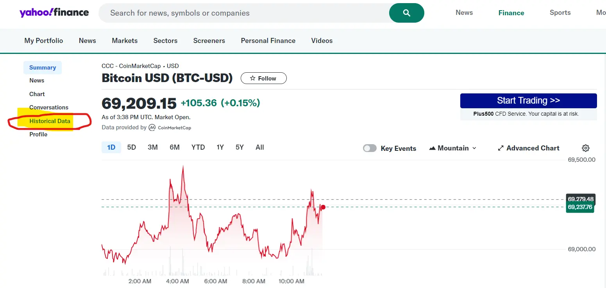
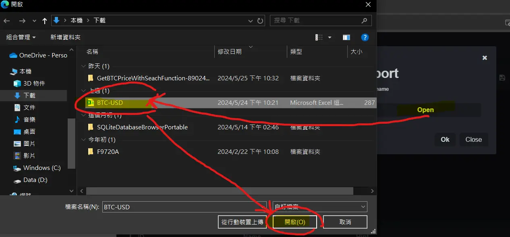
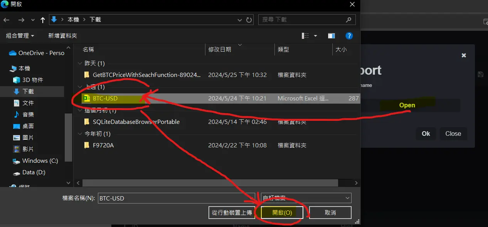

在IDE 裡建置Express.js 環境
參數設置ViewEngine:none

在終端機Terminal上
輸入: npm install sqlite3 --save 安裝即可抓取Sqlite database的套件

在package.json 裡找到 dependencies
若看到 "sqlite3": "^5.1.7" 即代表sqlite安裝成功
搜尋 Jina Ai
往下滑
選擇Reader
再往下滑
輸入要分析的網站
再按下Fetch Content 以抓取網站資料
可以問Ai 網站是如何抓取/使用Api 並寫成Html 以方便理解
到資料來源網站
 選擇範圍條件後 下載資料檔

確認 資料檔 是否為 資料庫 可匯入 之 格式

搜尋線上資料庫 : Online sqlite
把 資料檔 匯入線上資料庫
 


可選擇 欄位名稱 原始檔預設 或是 系統自動給的 欄位名稱


確認選擇好後 按 確認

在旁邊 資料庫table(資料庫表格) 可見已新增 BTC/USD 的table
在右邊 可看到 編輯語法紀錄

進去後即可看到 sql語法及所有資料庫裡的資料
確認檔案資料沒問題後 按下 Save DB 儲存 資料庫檔案 到電腦
在專案路徑內 新增資料夾 : db 在把資料庫檔案 放進去
複製資料庫sql 語法 問ai如何串接html,app.js,json

貼上專案路徑,後端程式碼,前端程式碼,sql特定語法 詢問ai ,ai會越能理解你的問題

由於index.html 在public資料夾裡面
若上傳到github github會抓不到
所以把index.html 搬出public資料夾 以便後續 聯網架接 會比較好處理
再請ai 寫新的架接程序
確認本地端是否可以抓取資料庫資料檔
確認功能正常後 再把檔案push更新到github
在到render註冊
建立 選取: Web Service
連接到GitHub Repository
選擇要連接的專案Repository
部屬後會有狀態列及專案部屬後網址